Business carousels: examples
Fifteen starting points made with the business-carousels skill's method. Each one shows a different way to make a slide teach. None sets your colours, fonts, people, wording or layout.
Click any image for full size. Prompts for every example are in the skill's example-prompts page.
Trades and products
Visuals that explain the cause, not decorate the headline.
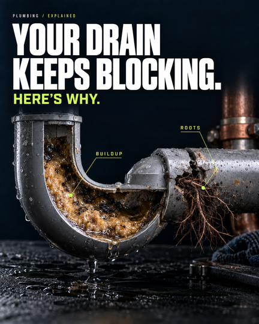
Plumbing Photoreal cutaway
Shows the cause (buildup, roots) with two labels on the right objects.
Watch for Kicker is tiny on a phone.
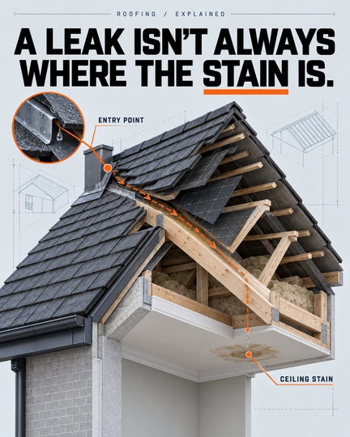
Roofing Explained diagram
A traced path links the entry point to the ceiling stain. The arrow carries the idea.
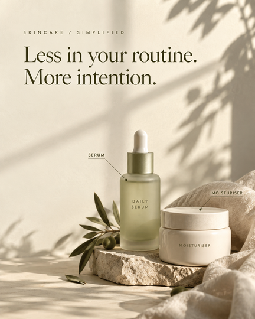
Skincare Quiet editorial
Space, serif headline and soft light. Minimal can still be detailed.
Watch for Labels repeat the product text and are small on a phone.
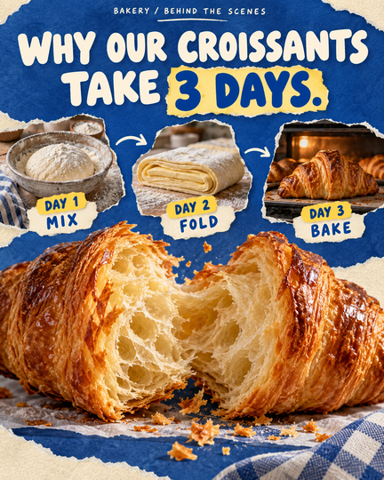
Bakery Playful collage
A three-step sequence and one highlighted figure.
Watch for The three-day process is fictional. Only claim what's true for your business.
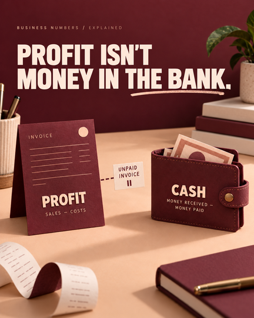
Accountant Sculptural explainer
Objects stand in for ideas: profit on the invoice, cash in the wallet.
Watch for Kicker is small on a phone.
People in Australian settings
Believable people doing real work. All fictional: never staff, customers or testimonials.
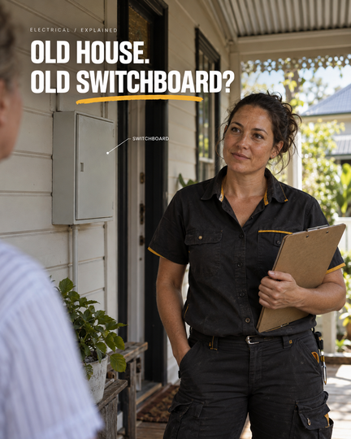
Electrician Human moment
Documentary portrait on a Queenslander verandah. The label points at the switchboard, not the person.
Watch for The SWITCHBOARD label is too small on a phone.
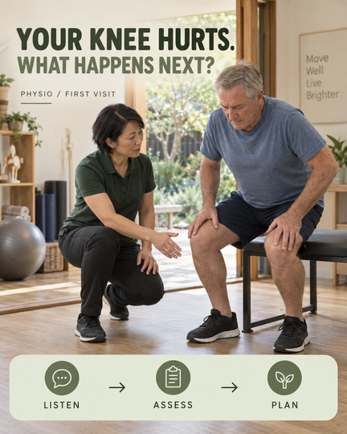
Physio Human moment + steps
A real interaction plus a three-step strip that explains the first visit.
Watch for Wall text is generated set dressing.
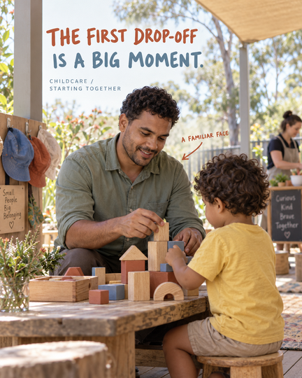
Childcare Hand-drawn pointer
Educator and child, child shown from behind.
Watch for Check spelling on every generated sign.
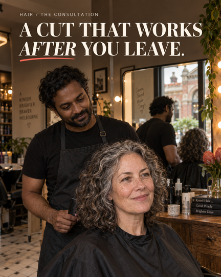
Hair salon Serif editorial
Honest skin and curl detail; the mirror reflection matches the scene.
Watch for Several generated slogans in the background.
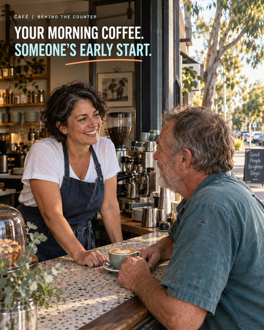
Café Neighbourhood reportage
Rapport carries the story, not a giant product shot.
Watch for Generators repeat slogans across images.
One scene, three type treatments
Same artwork. Only the typography changes. Figures belong to a dated news report.
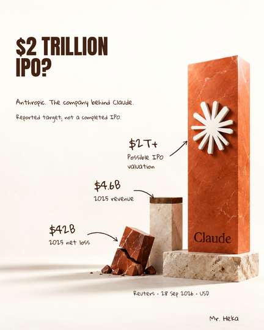
Restrained bold Final
Modest heavy headline, space, handwritten labels with arrows, qualification kept on the cover.
Watch for Sculpture heights aren't to scale.
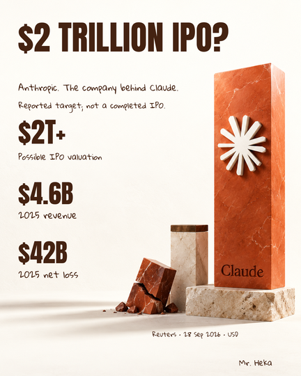
Strong editorial Alternative
Bigger headline and stacked numbers: more punch, less link between figures and objects.
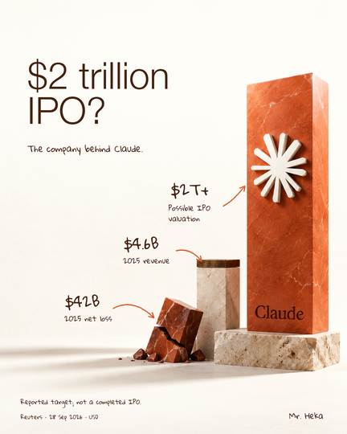
Light editorial Trial
A calmer light headline. Handwriting stays the real font.
Interiors
Inside pages get the same care as the cover.
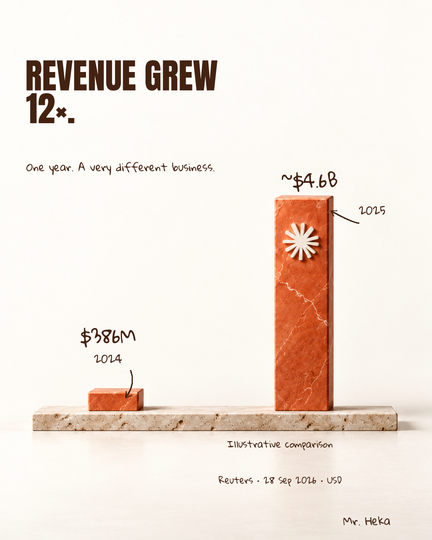
Revenue grew 12x Labelled illustrative
Units and years on every figure; labelled 'Illustrative comparison' because the heights aren't measured.
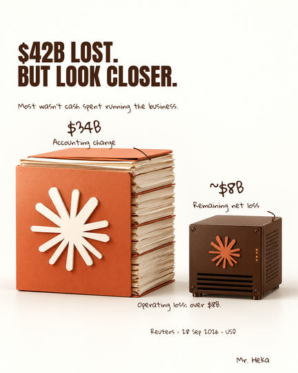
$42B lost, look closer Keeps the qualification
Splits the $42B into a $34B accounting charge and about $8B remaining loss.
Watch for Blocks aren't to scale and there's no 'Illustrative comparison' label. Add one when you reuse this.